When our eyes can’t decide.
Jan Freyberg
Research Associate
King's College London
When we see, we make decisions.
When we see, we make decisions.
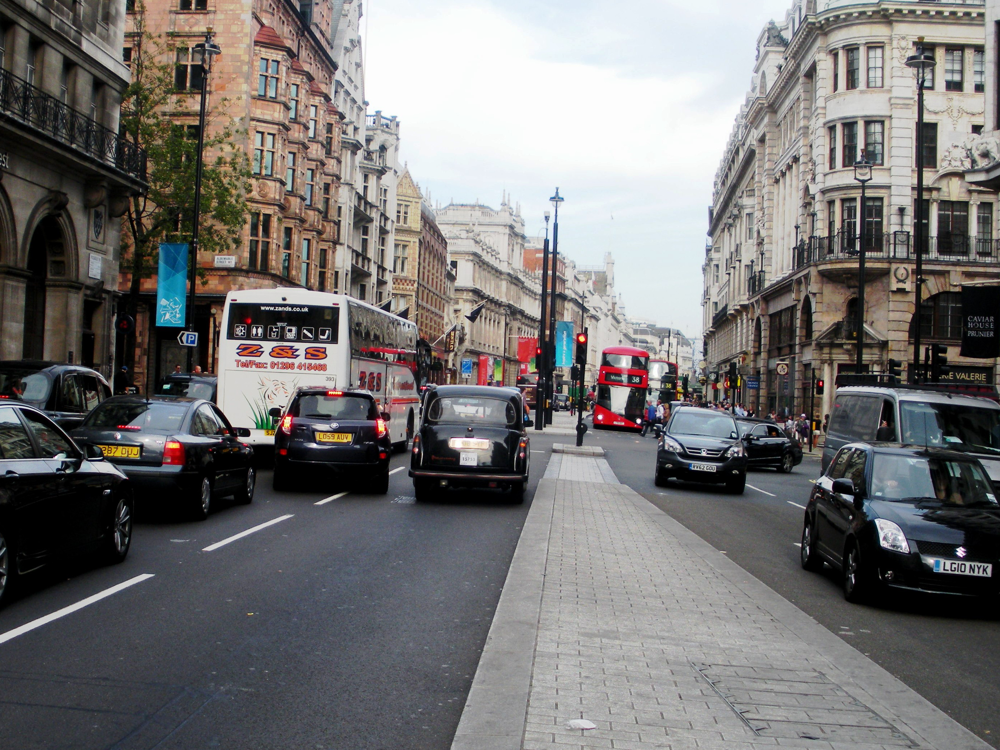When we see, we make decisions.
When we see, we make decisions.
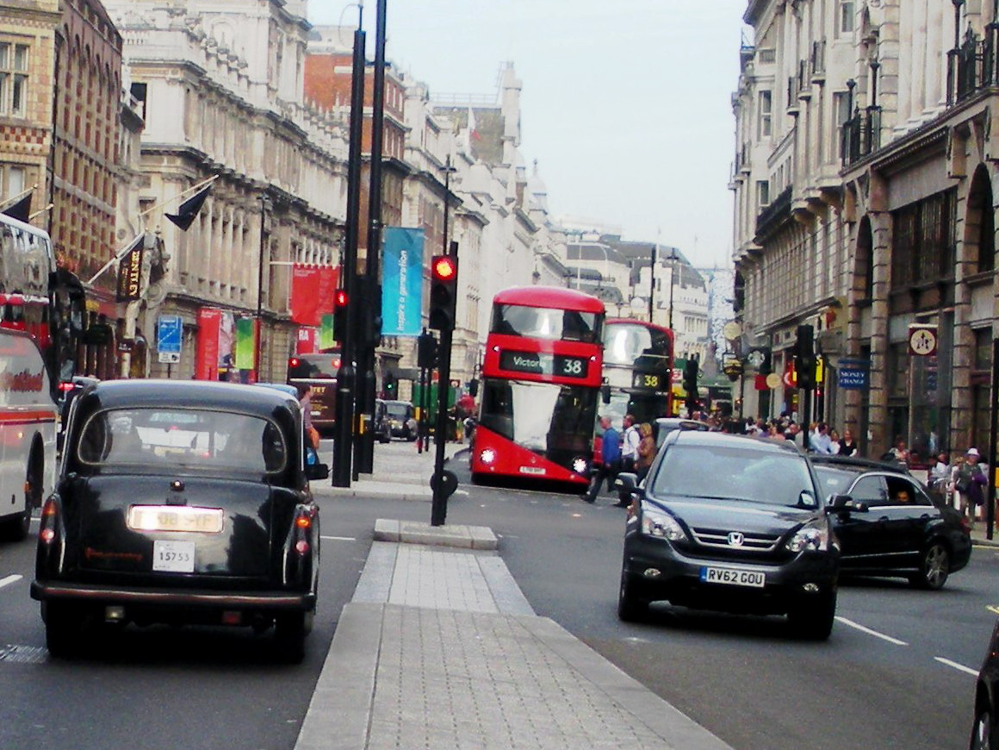Sometimes, making these decisions is difficult.
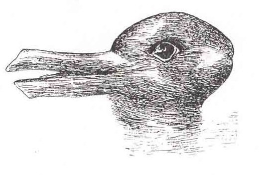Sometimes, making these decisions is difficult.
Stable input can produce unstable vision.
Stable input can produce unstable vision.
Stable input can produce unstable vision.
Stable input can produce unstable vision.
Bistable perception can happen with moving images!

Bistable perception can happen with moving images!

This does not tell you whether you're right-brain or left-brain dominant.
But can it tell us anything about the brain?
It turns out, quite a bit.
High-level understanding of the world helps the visual system decide.
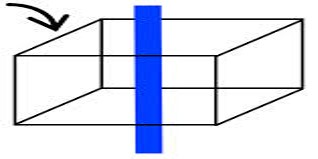 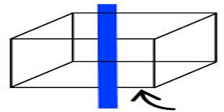
High-level understanding of the world helps the visual system decide.
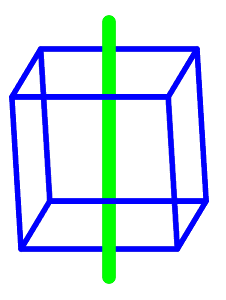
Brain activity is "exclusive" in the visual system.
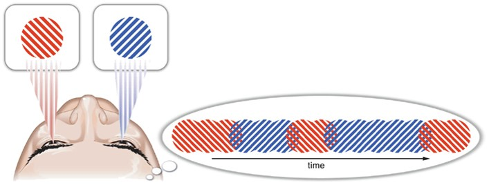 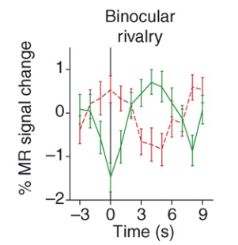Try out binocular rivalry!
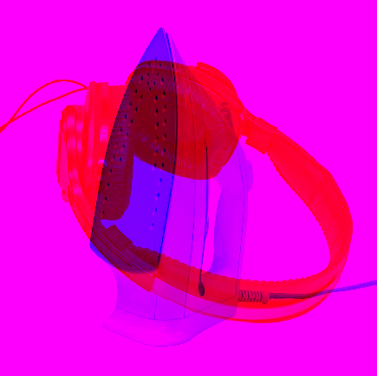This indicates competition in the brain.
Neuron 1 -> 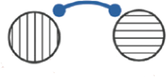 <- Neuron 2
This indicates competition in the brain.
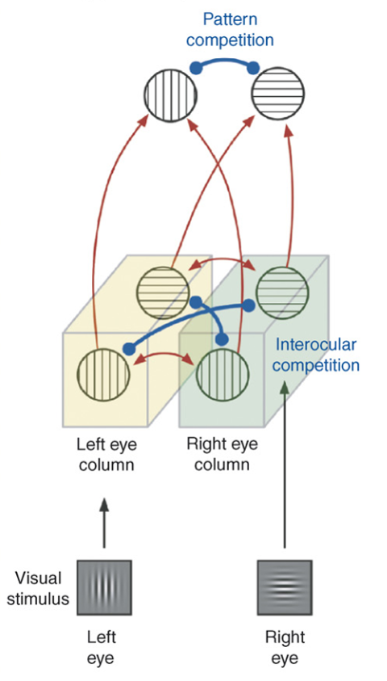Competition allows us to study brain signalling.

GABA
(inhibitory)

Glutamate
(excitatory)
Neurotransmitters are linked to competition.
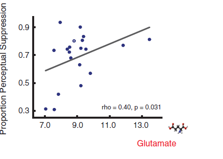 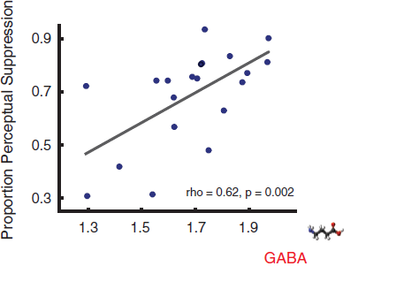Therefore, this competition could be a "proxy" measure.
When we want to measure neurotransmitters, we often don't have many options - especially not if we want to save money and time.
And yet, measuring neurotransmitters is important when it comes to neurological or psychiatric conditions.
Using bistable perception in amblyopia.
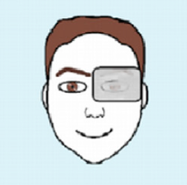Using bistable perception in amblyopia.
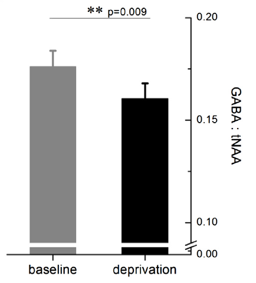 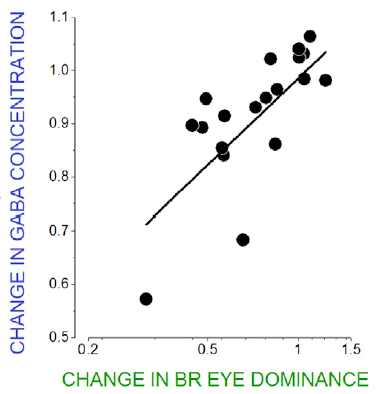Using bistable perception in autism.
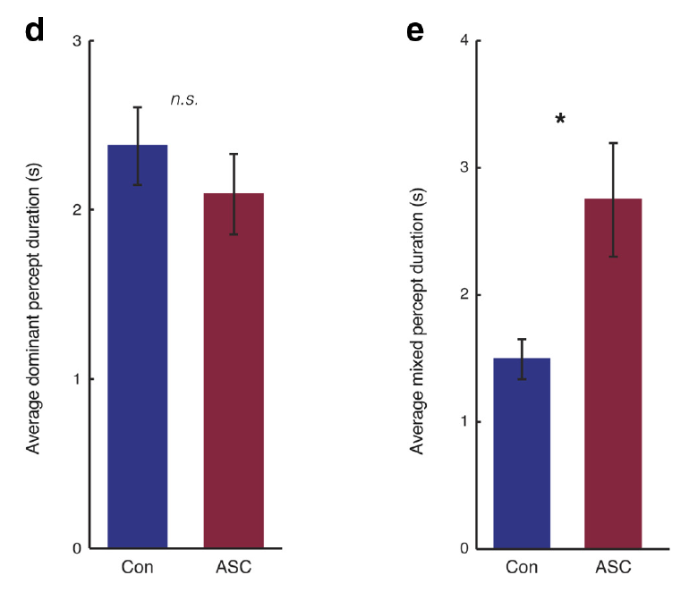Using bistable perception in bipolar disorder.
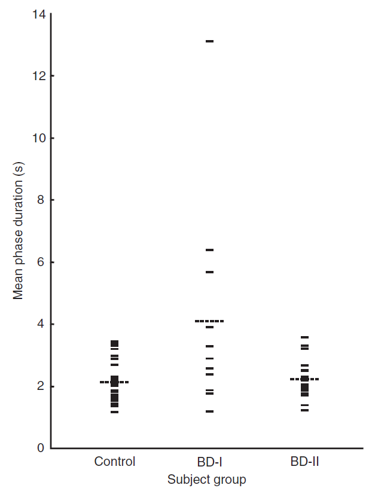Conclusions.
- Bistable perception relies on competition in the brain.
- This means we can use it to study brain signalling.
- That in turn gives us a chance to study neurological and psychiatric disorders.